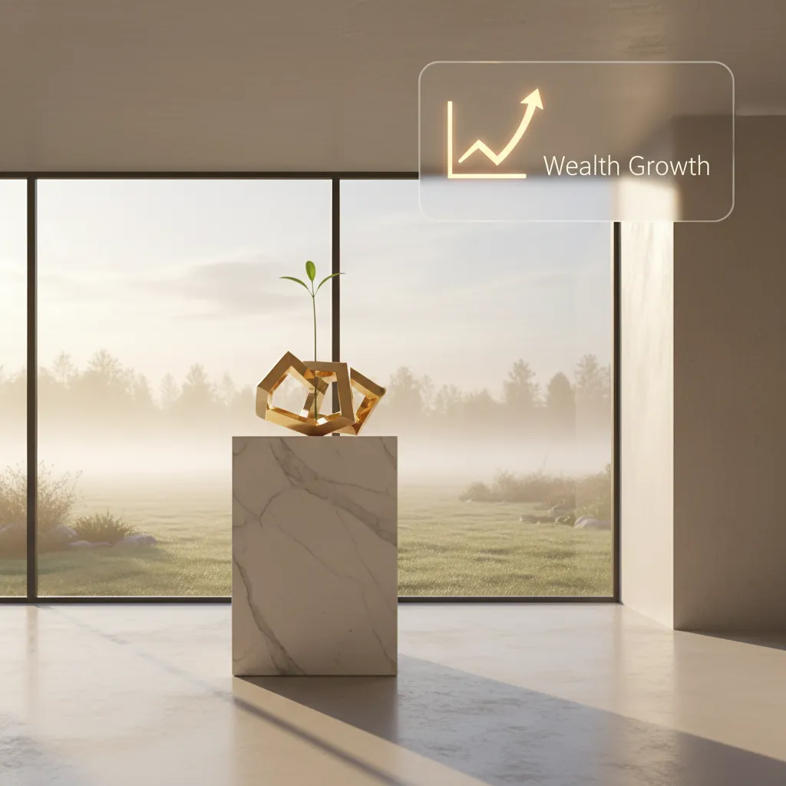
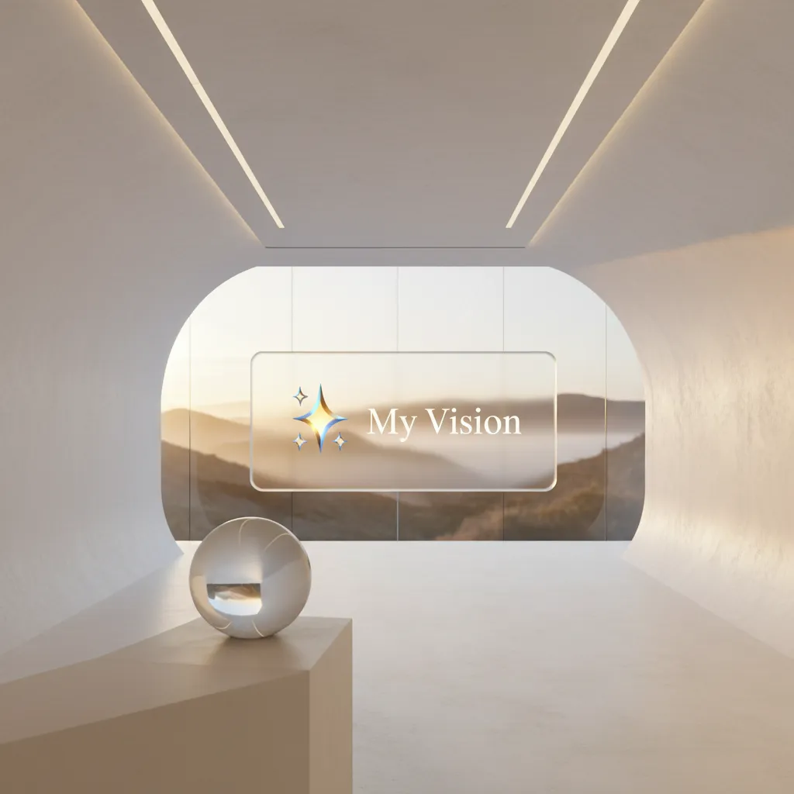

Типы целей и продукты Сбера
Соответствие целей PFP и рекомендуемых продуктов экосистемы (черновик — уточняется с Сбером).

Достойная пенсия
Продукты: ПДС / НПФ, инвестиции (УК «Первая», брокер Сбер)

Наследство
Продукты: ИСЖ, НСЖ (Сбер Страхование жизни)

Защита жизни
Продукты: СЖ, НСЖ («Подушка безопасности» и др.)

Финансовый резерв
Продукты: накопительный счёт, ликвидные инструменты Сбера

Другие цели
Продукты: депозит, ИСЖ, инвестиции